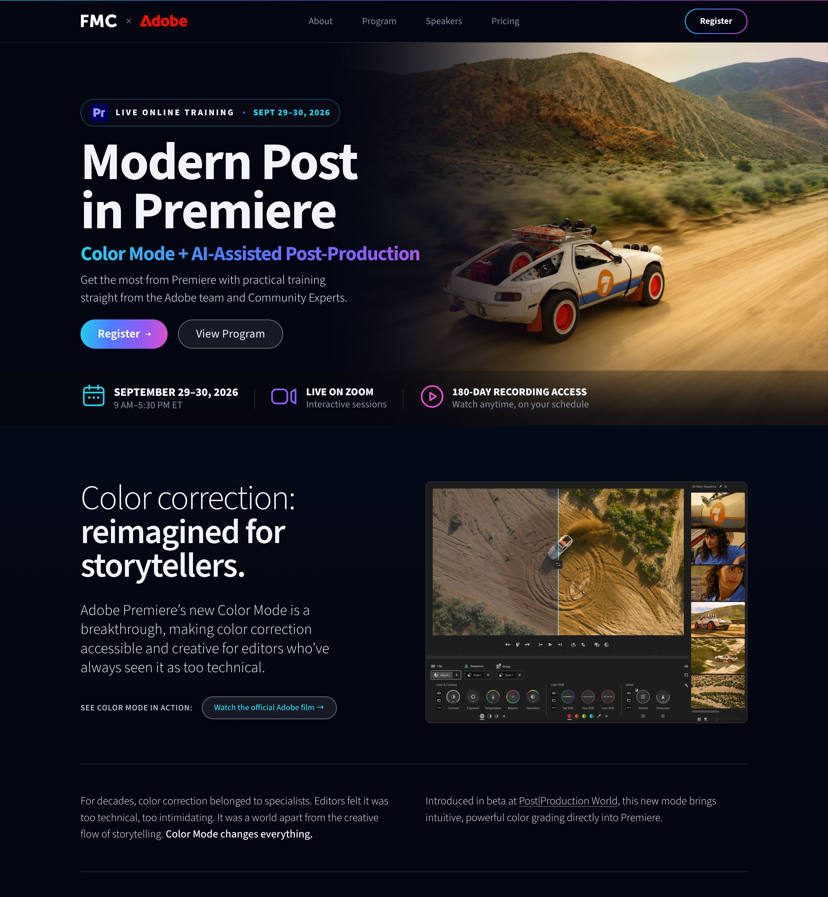

FMC × Adobe · postinpremiere.com
The event, copy, and Adobe interface capture are unchanged. What changed is how the hero presents them: type hierarchy, the live-training badge, a graded cinematic background, and a tighter benefits rail. Every option below is the real page rendered live, not an image — each includes the new second section and a peek of the third so you can see the flow.

The background is the raw aerial footage graded dark and cinematic; the panel is the real Adobe capture showing that same footage split-graded in Color Mode. The page demonstrates what the training teaches.
Full-bleed aerial with the car carving the frame. Without the interface, the Premiere tile moves into the badge. Better suited to campaign imagery than the site hero, where the panel is the proof this is software training.
Identical to Option A but the rail keeps "Join Live from Anywhere" as a fourth item.
Ship Option A. Option B is the stronger standalone image, but it could open any automotive campaign — Option A is the only version that proves this is Premiere training. The background imagery in all options is pending final asset approval from Adobe.